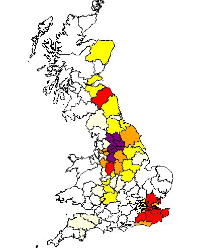
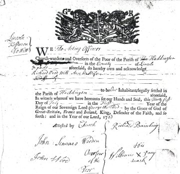
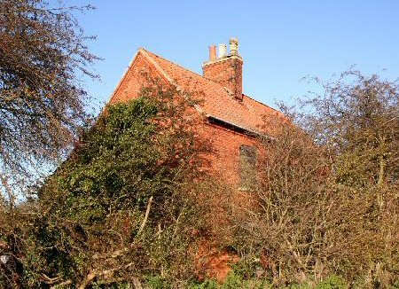

Surname Origin: 1) Originally used to describe a person who lived in or worked in a wood or forest, derived from Middle English wode. 2) Possibly derived from the Old English wad, meaning crazed or crazy — the name was sometimes used to describe someone considered mad or violent. 3) An ancient Scottish surname, first called De Bosco, because the family bore trees in their coat of arms.

Our earliest Wood ancestors have been traced back to Lincoln and a Thomas Wood and his wife Ann. He and Ann had five children. It is not clear where or how they met and we are not sure whether they were originally from Lincolnshire. Their third child and eldest son was John Wood. He married Mary Neve in Lincoln in 1715 and immediately settled in Housham, at Housham Wood Farm , where the Wood family was to remain for over 200 years.
All seven of their children were baptised at nearby South Hykeham parish. Mary Wood died in September 1738 and John married again to Hannah Rawson at Lincoln St Swithens in January 1743. John served as Haddington churchwarden at South Hykeham on no fewer than seven occasions, the first being 1715-16. He died in 1762 and interestingly was succeeded by his youngest son Richard an interesting survival of manorial copyhold practise.
Richard Wood, who was baptised in March 1730, married Anne Pacey at Auborn in July 1761 and secured a settlement certificate to Swinderby for himself and his new wife the same year. Tragedy struck however and Anne died in May 1762, no doubt the key reason influencing Richard to stay at Howsham. He subsequently remarried and had four children by his second wife Mary Pattinson in the period 1764-1770. Since the last three of these children was not allowed baptism in 1770 it can only be assumed that Richard and his wife had by then become committed Baptists. Like his father he served several spells as churchwarden, three of these being subsequent to his adoption of Baptism. He died in June 1786 and was buried at South Hykeham.

Richard was succeeded by his eldest son John Wood, who like his father and grandfather was to marry twice. Baptised in December 1767 he first married Elizabeth Andrew at South Hykeham in April 1792. Theirs was a fruitful union with four daughters and two sons baptised in the period up to 1800, John clearly not having adopted the Baptist persuasions of his parents, and was clearly the last of his family to serve as churchwarden at South Hykeham. Elizabeth died in 1806 and John remarried to Susannah Hague at Swinderby the following year, a marriage blessed by twin sons in August 1808. Susannah died in 1830 leaving John the widower he appears in the 1841 Census. He died himself in March 1849.
William Wood, one of the twins, then took on the farm. He married his wife Sarah Hunt in February 1829 and was later the object of deep consternation in 1870 when his 23 year old daughter Emma Wood gave birth to an illegitimate child by Henry Spick, a farm labourer of Farndon in Nottinghamshire, although Spick subsequently agreed to pay the child maintenance of two shillings a week. William who was farming 80 acres in 1851, had however sufficient status to serve as Chairman of the Haddington Parish Vestry in 1857 and 1864. He was buried in 1889.

William and Sarah's daughter Ann married the boy next door when she married William Drury the son of neighbouring Housham farmer, in 1854.
Her brother continued to farm Housham and his family continued the association with the farm until 1950. A total of 235 years.
Current Research : There is a need to establish more evidence that the Thomas Wood who settled in Lincoln at the end of 17th Century, was the same Thomas born in Alstonfield, Staffordshire.